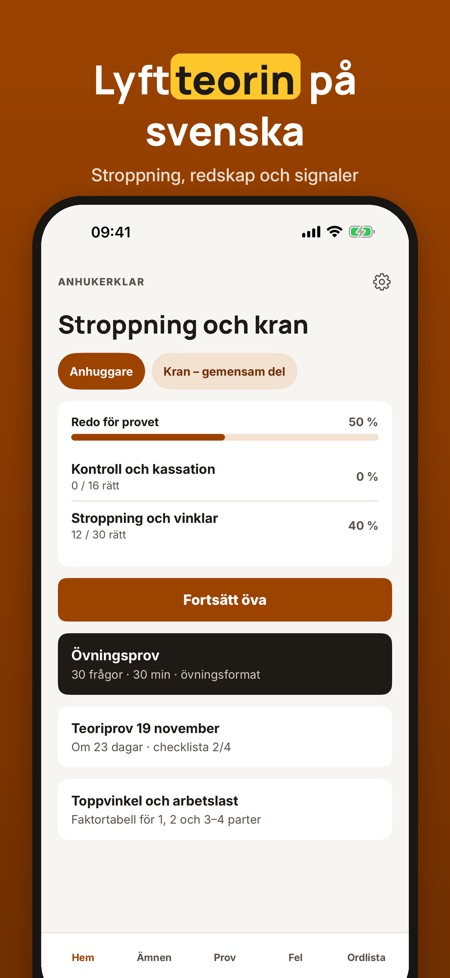
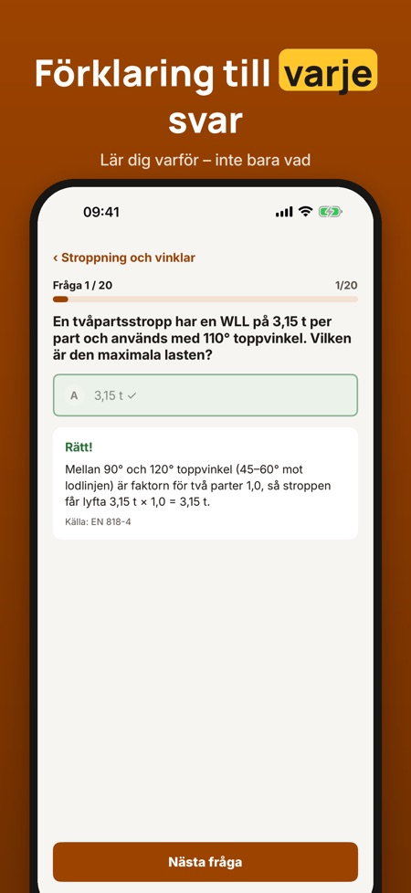
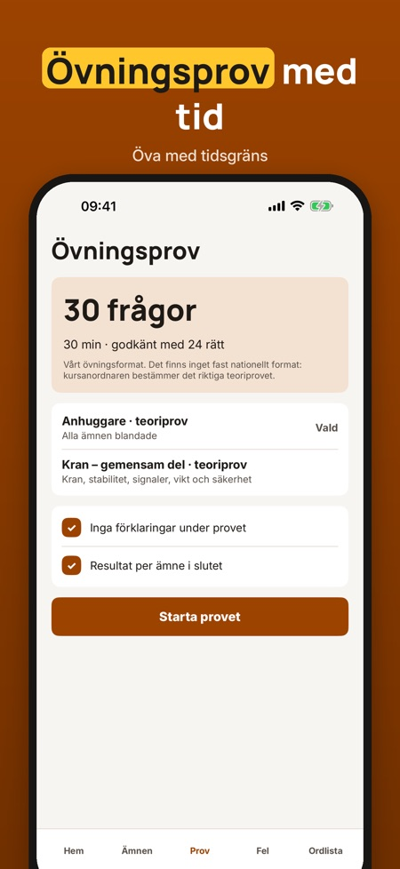

Stroppning, lyft och kran. Öva teorin för lyftkort och stroppning: frågor med förklaring, övningsprov och dina fel samlade – på svenska och utan internet.



Lyftklar hjälper dig att öva teorin för stroppning och lyft med kran – lyftredskap, vinklar, signaler och säkerhet.
Du kan öva 20 frågor, ordlistan och checklistan utan köp. Fullversionen är ett engångsköp som låser upp alla frågor, övningsprov och statistik. Ingen prenumeration.
Lyftklar är fristående och inte kopplad till Arbetsmiljöverket eller någon kursanordnare. Skriftligt tillstånd ger arbetsgivaren; utbildningen får du hos en utbildare.